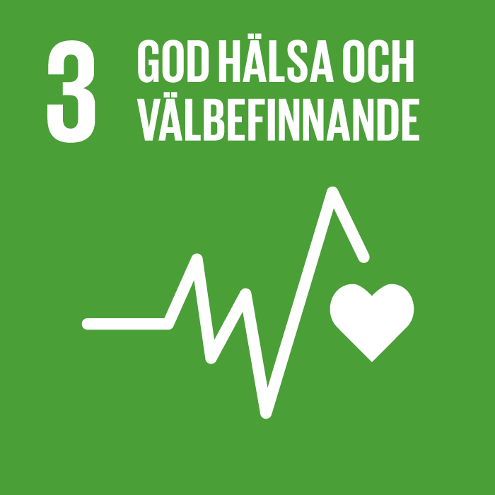
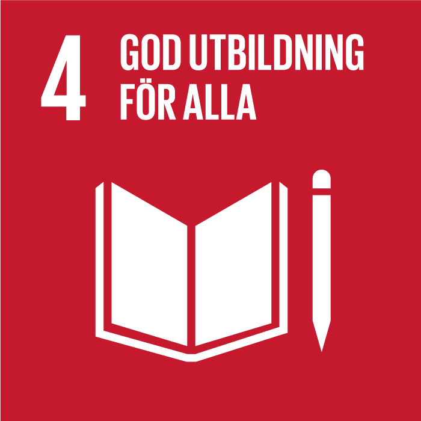
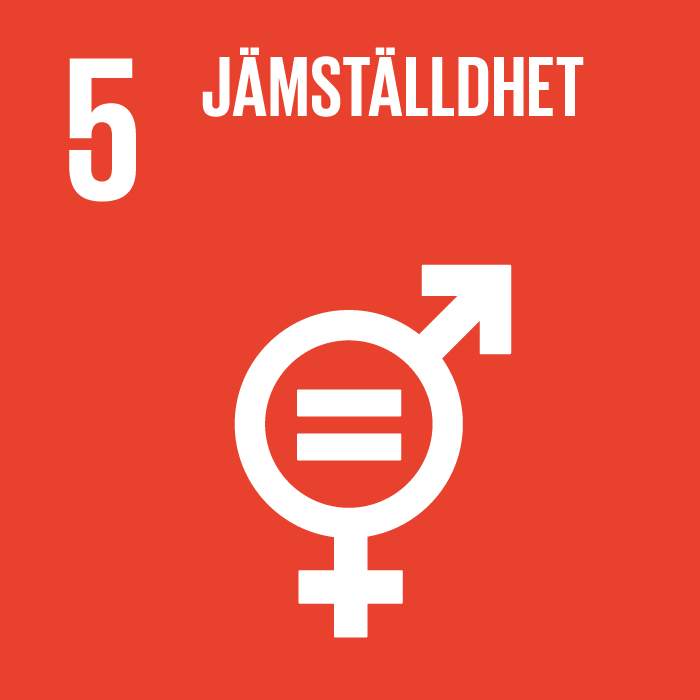
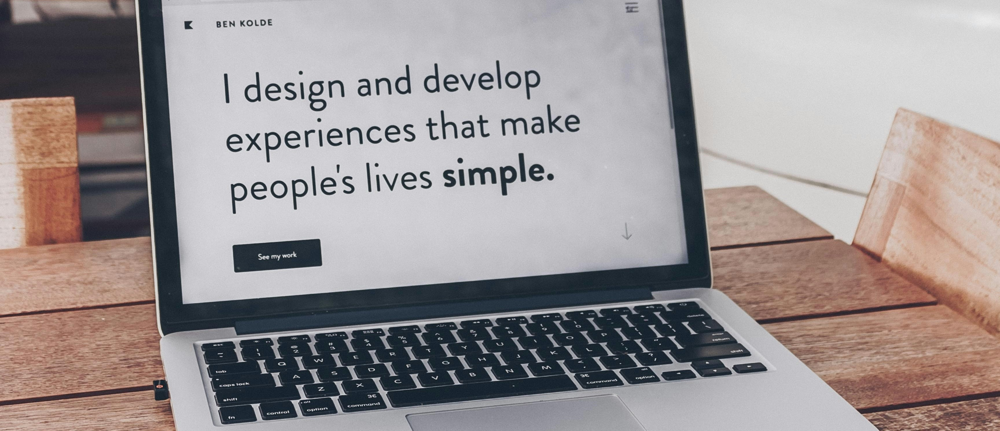

Hållbarhet ur ett tillgänglighetsperspektiv



För att ingen i vårt samhälle ska lämnas utanför är det viktigt att designa för människors olika behov
Digg – Myndigheten för digital förvaltning, har en lista med webbriktlinjer som man som utvecklare
bör känna till och sträva efter att följa för att skapa socialt hållbara informationssystem.
Lagen om tillgänglighet till digital offentlig service (DOS-lagen)
Såhär säger lagen
DOS-lagen, eller Lag 2018:1937 om tillgänglighet till digital offentlig service,
innehåller bestämmelser som innebär att tjänster och information som en offentlig aktör
tillhandahåller genom en webbplats eller mobil applikation ska vara tillgänglig.
Sådan digital service ska uppfylla kraven genom att vara:
- Möjlig att uppfatta
- Hanterbar
- Begriplig
- Robust
- Tillgänglighetsredogörelse
Lagen innehåller även bestämmelser om att offentliga aktörer ska tillhandahålla en så kallad tillgänglighetsredogörelse, som bland annat ska beskriva hur den aktuella webbplatsen eller applikationen lever upp till kraven.
Lagen och åtgärder för att följa den
Som systemutvecklare ska du tänka på att det systemet du skapar ska vara socialt hållbart inte ska skapa frustration för användaren.
Du behöver tänka på flera olika scenarion där användaren kan ha svårigheter eller kan stöta på svårigheter.
Här under har vi samlat tips ifrån webbriktlinjerna. Vill du läsa webbriktlinjerna i sin helhet så kan du klicka på den här länken:
Myndigheten för digital förvaltning
- Synnedsättning - Speciellt på webben använder människor med synnedsättning skärmläsare, för deras skull är det viktigt att innehåll presenteras i en logisk ordning och att bilder och knappar beskrivs med ord så att de med lätthet kan navigera på sidan och dess funktioner. Tänk även på att röd/grön färgblindhet är vanligt, förmedla därför aldrig besked med enbart färg.
- Håll en konsekvent design – det hjälper alla användare om man snabbt förstår hur man ska navigera mellan webbplatsens sidor.
- Hörselnedsättning - Tänk på att texta tal om sidan använder information i videoformat eller transkribera ljudklipp.
- Förutsägbar - Användare vill att systemet beter sig som förväntat så gör inga oväntade förändringar eller resultat sker.
- Fel inmatning – visa användaren vart det blivit fel.
- Språk - Ange sidans språk i koden.
- Använd text inte bilder - för att förmedla text.
- Kontraster - Använd tillräckliga kontraster mellan komponenter och grafik, text och bakgrund för att göra texten enklare att läsa, se även till att sidan går att zooma in och ut för att öka/minska textstorleken, minst 200% utan att krocka med annat innehåll. Testa din sida! Här är ett exempel där man kan testa sin sida: ContrastChecker
- Olika alternativ - Erbjud olika alternativ för komplexa fingerrörelser, att svajpa, nypa isär och dra ihop med fingrarna kan vara svårt om du har motoriska svårigheter. Ge användaren möjlighet till att klicka.
- Navigera - Erbjud olika sätt att navigera till exempel är Meny och Sök olika sätt för användaren att hitta det innehåll som den söker.
- Ljud och rörelser - Gör det möjligt att pausa, stänga av eller sänka ljud och rörelser.
- Tabba - Ge användaren möjlighet att tabba mellan innehåll och visa även vilket element som är i tangentbordets fokus för att hjälpa användaren.
- Anpassa efter skärm - Se till att innehållet anpassas efter skärmens riktning, du vet aldrig om användaren kommer att besöka din sida på en stående eller liggande skärm. Alltid Mobile first.
- Beskriv länkar - Så att användaren förstår vart de leder, gör det visuellt tydligt att det är en länk.
Verktyg
Nedan följer lite tips på verktyg som går att använda sig utav när man utvecklar för att öka tillgängligheten.
- WCAG (Web Content Accessibility Guidelines) som tillhandahåller rekommendationer för att göra webbinnehåll mer tillgängligt.
- Tillgänglighetskontrollverktyg som AXE, Lighthouse, och WAVE kan användas för att identifiera problem.
- Skärmläsarteknologi som JAWS, NVDA, eller VoiceOver för att testa hur webbplatser upplevs av användare med synnedsättning.
- Tillägg för kodredigerare som kan hjälpa till att upptäcka tillgänglighetsproblem i realtid, som till exempel Accessibility Insights för Visual Studio Code.
- Ramverk och bibliotek som fokuserar på tillgänglighet, som ARIA (Accessible Rich Internet Applications) för att förbättra webbapplikationers tillgänglighet.
De Fyra Grundläggande Principerna för Tillgänglighet (POUR)
POUR som står för: Perceivable, Operable, Understandable och Robust som är enligt Web Content Accessibility Guidelines (WCAG), som i sin tur är en del av W3C:s (World Wide Web Consortium), ett initiativ för webbtillgänglighet. Nedan följer en förklaring på de fyra principerna.
Perceivable (Uppfattbar): Information och användargränssnittskomponenter måste presenteras för användarna på sätt som de kan uppfatta. Det innebär att informationen inte får vara osynlig för alla deras sinnen.
Operable (Hanterbar): Användargränssnittskomponenter och navigation måste vara hanterbara. Det innebär att användarna måste kunna navigera, hitta innehåll och hantera gränssnittet utan problem.
Understandable (Förståelig): Information och användning av användargränssnittet måste vara förståeligt. Det innebär exempelvis att textinnehåll ska vara läsbart och förståeligt och att webbsidor ska fungera på förutsägbara sätt.
Robust (Robust): Innehåll måste vara tillräckligt robust för att kunna tolkas tillförlitligt av ett brett urval av användaragenter, inklusive assisterande teknologier. Det innebär att utvecklare måste följa standarder och riktlinjer för att säkerställa kompatibilitet.

Hur går man vidare med denna information då?
Nedan följer några förslag på hur du som systemutvecklare kan anpassa dig efter dessa principer när du utvecklar för att öka tillgängligheten.
Implementering av POUR i Webbutveckling:
Perceivable (Uppfattbar):
- Fokusera på att utveckla för alla sinnen, exempelvis < alt> attribut för bilder. Koda med semantisk HTML såsom < header>, < nav>, < main>, < footer>, < section> och så vidare samt använda < h1> till < h6> för rubriker och underrubriker, vilket ger en tydlig hierarki för att förbättra webbplatsens tillgänglighet för skärmläsare.
- Använd ARIA-roller för att öka tillgängligheten, läs mer om vad ARIA är längre ner på sidan.
- Implementera användarpreferenser, som att låta användare välja mellan olika färgteman och justera textstorleken.
Operable (Hanterbar):
- Använda semantisk HTML som naturligt stöder tangentbordsinteraktioner, som < button>, < a>, och < input>.
- För anpassade widgetar som skapas med divs eller span, använd tabindex="0" för att göra dem fokuserbara och lägg till tangentbordslyssnare för att hantera interaktioner som Enter eller Space nycklarna.
- Utveckla inte med orimliga tidsgränser, alternativt låt användaren påverka tiden genom att förlänga eller stänga av och även bli upplyst om att tiden håller på att ta slut.
Understandable (Förståelig):
- Implementera omfattande felhantering och validering för formulär. Ge specifika, förståeliga felmeddelanden och förslag till korrigeringar när användare fyller i formulär. Använd attribut som aria-invalid="true" för att markera fält med fel och aria-describedby för att länka till en förklaring eller korrigering.
- När du arbetar med AJAX, SPA:s (Single Page Applications), eller andra dynamiska innehållstekniker, se till att uppdateringar av sidans innehåll är tydliga för alla användare, inklusive de som använder skärmläsare.
- Designa med tanke på klarhet och enkelhet, undvik överflödiga funktioner eller innehåll som kan distrahera eller förvirra.
Robust (Robust):
- Validera din kod med hjälp av verktyg som W3C Validator för att upptäcka och åtgärda fel eller brister som kan påverka tillgängligheten.
- Testa ditt innehåll över ett brett spektrum av webbläsare, operativsystem och assisterande teknologier för att identifiera och åtgärda specifika kompatibilitetsproblem. Denna robusthet säkerställer att alla användare, oavsett deras teknikval, kan få åtkomst till och interagera med ditt innehåll.
Code of ethics and professional conduct
Systemutvecklare tar fram produkter som kan förändra världen. För att agera ansvarsfullt så borde vi reflektera över den stora påverkan som vårt arbete kan ha och alltid sträva efter människors bästa. “The ACM Code of Ethics and Professional Conduct” eller ("the Code") uttrycker yrkesgruppens samvete.
Syftet med “the Code” är att inspirera och guida en systemutvecklares handlingar till att vara etiska för människor som ska använda systemet. Du kan läsa riktlinjerna här: Code of Ethics i sin helhet. Men låt gärna vår lista över dem fungera som ledande riktlinjer i ditt arbete.
Del 1 handlar om grundläggande etiska principer.
- Bidra till samhället och människors välmående, förstå att alla människor är intressenter i datoranvändning
- Undvika att orsaka skada
- Vara ärlig och trovärdig
- Vara rättvis och ta ställning mot diskriminering
- Respektera det arbete som krävs för att producera nya idéer, uppfinningar, kreativa verk och dataskapelser
- Respektera privatliv
- Hålla sekretessen
Del 2 handlar om mer specifika överväganden om yrkesansvar.
- Sträva efter att uppnå och hålla hög kvalitet på både process och produkt i ditt arbete
- Håll hög standard på din kompetens, ditt uppträdande och hur du praktiserar etik
- Känn till och respektera befintliga regler som gäller professionellt arbete
- Acceptera och genomför lämplig professionell granskning
- Ge omfattande och noggranna utvärderingar av datorsystem och deras påverkan, inklusive analys av möjliga risker
- Utför arbete endast inom kompetensområden, annars ta hjälp
- Främja allmän medvetenhet och förståelse för datavetenskap, relaterade teknologier och deras konsekvenser
- Använd datorkraft och kommunikationsresurser endast när du är behörig eller när det krävs för samhällets bästa, dvs gör inte intrång även om det är ett offentligt tillgängligt system
- Designa och implementera system som är robusta och säkra för användaren
Del 3 tjänar till att guida individer som har ledande roller, på arbetsplatsen eller på andra ställen.
- Försäkra dig om att allmänhetens bästa är den centrala faktorn under allt professionellt arbete
- Utforma, främja acceptans av och utvärdera uppfyllandet av samhällsansvar hos medlemmar i organisationen eller gruppen
- Förvalta personal och resurser för att förbättra arbetslivets kvalitet
- Formulera, tillämpa och stödja policys och processer som återspeglar principerna i koden
- Skapa möjligheter att växa för medlemmar i gruppen eller företaget
- Var varsam när system ska uppdateras eller avvecklas
- Identifiera och ta särskild hänsyn till system som integreras i samhällets infrastruktur
Del 4 inkluderar principer som gäller kodens efterlevnad.
- Upprätthålla, främja och respektera principerna i koden
- Behandla överträdelser av koden som oförenliga med medlemskap i ACM.
ARIA (Accessible Rich Internet Applications)
ARIA-roller är en del av W3C:s Web Accessibility Initiative och definierar ett sätt att göra webbinnehåll och webbapplikationer mer tillgängliga för personer med funktionsnedsättningar. Dessa roller hjälper till med dynamiskt innehåll och avancerade användargränssnittskontroller utvecklade med HTML, CSS och JavaScript och relaterade teknologier. Utan WAI-ARIA kan viss funktionalitet på webbplatser vara otillgänglig för vissa användare med funktionsnedsättningar, särskilt de som förlitar sig på skärmläsare och de som inte kan använda en mus.
WAI-ARIA erbjuder en ram för att lägga till attribut för att identifiera funktioner för användarinteraktion,hur de förhåller sig till varandra och deras aktuella tillstånd.
Det beskriver navigeringstekniker för att markera regioner och vanliga webbstrukturer som menyer, huvudinnehåll, sekundärt innehåll, bannerinformation och andra typer av webbstrukturer.
Med WAI-ARIA kan utvecklare identifiera sidregioner och möjliggöra för tangentbordsanvändare att enkelt flytta mellan regioner istället för att behöva trycka på Tab många gånger. WAI-ARIA inkluderar också tekniker för att kartlägga kontroller, live-regioner och händelser till tillgänglighetsprogrammeringsgränssnitt (API:er), inklusive anpassade kontroller som används för rika internetapplikationer.
Grunden för ARIA är mer än 150 deklarationer som kan läggas till i webbsidekod.